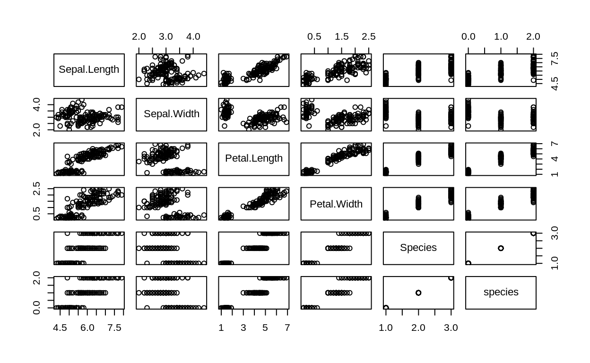

Table of Contents
はじめに
こいつはtidyverse内のmagrittrというパッケージの機能で、パイプ演算子あるいは単にパイプと呼ばれたりします。
- 受講生は必ずしも理解しなくても大丈夫です。
参考になるウェブサイト
- R for Data ScienceのPipes
- magrittrのvignetteの訳
必要なパッケージの読み込み
library(tidyverse)
── Attaching packages ───────────────────────────────────────────────────────────────────────────────────────────────────────── tidyverse 1.2.1 ──
✔ ggplot2 3.1.1 ✔ purrr 0.3.2
✔ tibble 2.1.1 ✔ dplyr 0.8.0.1
✔ tidyr 0.8.3 ✔ stringr 1.4.0
✔ readr 1.3.1 ✔ forcats 0.4.0
── Conflicts ──────────────────────────────────────────────────────────────────────────────────────────────────────────── tidyverse_conflicts() ──
✖ dplyr::filter() masks stats::filter()
✖ dplyr::lag() masks stats::lag()
library(magrittr)
Attaching package: 'magrittr'
The following object is masked from 'package:purrr':
set_names
The following object is masked from 'package:tidyr':
extract
library(rmarkdown)基本的な使い方
基本的に%>%は左辺の出力を右辺の関数の第1引数にします。 つまり、f %>% gはg(f)と同値です。 ちなみに、RStudioではShift + Ctrl + Mで入力します。
summary(iris)
Sepal.Length Sepal.Width Petal.Length Petal.Width Species
Min. :4.300 Min. :2.000 Min. :1.000 Min. :0.100 setosa :50
1st Qu.:5.100 1st Qu.:2.800 1st Qu.:1.600 1st Qu.:0.300 versicolor:50
Median :5.800 Median :3.000 Median :4.350 Median :1.300 virginica :50
Mean :5.843 Mean :3.057 Mean :3.758 Mean :1.199
3rd Qu.:6.400 3rd Qu.:3.300 3rd Qu.:5.100 3rd Qu.:1.800
Max. :7.900 Max. :4.400 Max. :6.900 Max. :2.500
iris %>% summary()
Sepal.Length Sepal.Width Petal.Length Petal.Width Species
Min. :4.300 Min. :2.000 Min. :1.000 Min. :0.100 setosa :50
1st Qu.:5.100 1st Qu.:2.800 1st Qu.:1.600 1st Qu.:0.300 versicolor:50
Median :5.800 Median :3.000 Median :4.350 Median :1.300 virginica :50
Mean :5.843 Mean :3.057 Mean :3.758 Mean :1.199
3rd Qu.:6.400 3rd Qu.:3.300 3rd Qu.:5.100 3rd Qu.:1.800
Max. :7.900 Max. :4.400 Max. :6.900 Max. :2.500 これだけだとパイプ演算子のご利益は分かりにくいですが、コードが長くなるにつれてその力を発揮します。 例えば、irisの各品種について各変数の平均と中央値を求めてみます。
パイプ演算子を使うと次のように一行のコードで書くことができます。
iris %>%
gather(key = var, value = val, -Species) %>%
group_by(var, Species) %>%
summarise(mean = mean(val),
median = median(val)) %>%
paged_table()これをパイプ演算子を使わないと、次のようになります。
paged_table(summarise(group_by(gather(iris, key = var, value = val, -Species), var, Species), mean = mean(val), median = median(val)))あるいは適当なオブジェクトを作成して次のようにします。
temp <- gather(iris, key = var, value = val, -Species)
temp <- group_by(temp, var, Species)
temp <- summarise(temp, mean = mean(val), median = median(val))
paged_table(temp)このように考えるとパイプ演算子のご利益は次のようにまとめられます。
- 処理をする順番に関数が登場するので可読性を高めることができる。
- 一行でコードを書くことができるので無駄なオブジェクトを作らなくてよい。
データの代入
データを加工する際、パイプを使うと基本的にはこのようになります。
iris <- iris %>%
mutate(species = case_when(Species == "setosa" ~ 0,
Species == "versicolor" ~ 1,
Species == "virginica" ~ 2))
summary(iris)
Sepal.Length Sepal.Width Petal.Length Petal.Width Species species
Min. :4.300 Min. :2.000 Min. :1.000 Min. :0.100 setosa :50 Min. :0
1st Qu.:5.100 1st Qu.:2.800 1st Qu.:1.600 1st Qu.:0.300 versicolor:50 1st Qu.:0
Median :5.800 Median :3.000 Median :4.350 Median :1.300 virginica :50 Median :1
Mean :5.843 Mean :3.057 Mean :3.758 Mean :1.199 Mean :1
3rd Qu.:6.400 3rd Qu.:3.300 3rd Qu.:5.100 3rd Qu.:1.800 3rd Qu.:2
Max. :7.900 Max. :4.400 Max. :6.900 Max. :2.500 Max. :2 しかし、左から右に流れるべきと思う場合は次のように書くこともできます。
iris %>%
mutate(species = case_when(Species == "setosa" ~ 0,
Species == "versicolor" ~ 1,
Species == "virginica" ~ 2)) -> iris
summary(iris)
Sepal.Length Sepal.Width Petal.Length Petal.Width Species species
Min. :4.300 Min. :2.000 Min. :1.000 Min. :0.100 setosa :50 Min. :0
1st Qu.:5.100 1st Qu.:2.800 1st Qu.:1.600 1st Qu.:0.300 versicolor:50 1st Qu.:0
Median :5.800 Median :3.000 Median :4.350 Median :1.300 virginica :50 Median :1
Mean :5.843 Mean :3.057 Mean :3.758 Mean :1.199 Mean :1
3rd Qu.:6.400 3rd Qu.:3.300 3rd Qu.:5.100 3rd Qu.:1.800 3rd Qu.:2
Max. :7.900 Max. :4.400 Max. :6.900 Max. :2.500 Max. :2 あるいは%<>%という演算子を使うこともできます。
iris %<>%
mutate(species = case_when(Species == "setosa" ~ 0,
Species == "versicolor" ~ 1,
Species == "virginica" ~ 2))
summary(iris)
Sepal.Length Sepal.Width Petal.Length Petal.Width Species species
Min. :4.300 Min. :2.000 Min. :1.000 Min. :0.100 setosa :50 Min. :0
1st Qu.:5.100 1st Qu.:2.800 1st Qu.:1.600 1st Qu.:0.300 versicolor:50 1st Qu.:0
Median :5.800 Median :3.000 Median :4.350 Median :1.300 virginica :50 Median :1
Mean :5.843 Mean :3.057 Mean :3.758 Mean :1.199 Mean :1
3rd Qu.:6.400 3rd Qu.:3.300 3rd Qu.:5.100 3rd Qu.:1.800 3rd Qu.:2
Max. :7.900 Max. :4.400 Max. :6.900 Max. :2.500 Max. :2 左辺の参照
基本的にはパイプ演算子の左辺を右辺の第1引数にしますが、.を使うことで任意の引数にすることができます。 例えば、irisでsetosaを除外して回帰分析をしたい場合、第1引数はformulaなので普通はパイプで繋げることはできないが、以下のように書くことができます。
iris %>%
filter(Species != "setosa") %>%
lm(Sepal.Length ~ Sepal.Width, data = .) %>%
summary()
Call:
lm(formula = Sepal.Length ~ Sepal.Width, data = .)
Residuals:
Min 1Q Median 3Q Max
-1.0032 -0.3877 -0.0774 0.3200 1.7381
Coefficients:
Estimate Std. Error t value Pr(>|t|)
(Intercept) 3.0934 0.4844 6.387 5.70e-09 ***
Sepal.Width 1.1033 0.1675 6.585 2.27e-09 ***
---
Signif. codes: 0 '***' 0.001 '**' 0.01 '*' 0.05 '.' 0.1 ' ' 1
Residual standard error: 0.5547 on 98 degrees of freedom
Multiple R-squared: 0.3068, Adjusted R-squared: 0.2997
F-statistic: 43.36 on 1 and 98 DF, p-value: 2.27e-09また、%$%という演算子は右辺において左辺のデータを参照せずに変数名を指定することができます。 したがって、次のように書くこともできます。
iris %>%
filter(Species != "setosa") %$%
lm(Sepal.Length ~ Sepal.Width) %>%
summary()
Call:
lm(formula = Sepal.Length ~ Sepal.Width)
Residuals:
Min 1Q Median 3Q Max
-1.0032 -0.3877 -0.0774 0.3200 1.7381
Coefficients:
Estimate Std. Error t value Pr(>|t|)
(Intercept) 3.0934 0.4844 6.387 5.70e-09 ***
Sepal.Width 1.1033 0.1675 6.585 2.27e-09 ***
---
Signif. codes: 0 '***' 0.001 '**' 0.01 '*' 0.05 '.' 0.1 ' ' 1
Residual standard error: 0.5547 on 98 degrees of freedom
Multiple R-squared: 0.3068, Adjusted R-squared: 0.2997
F-statistic: 43.36 on 1 and 98 DF, p-value: 2.27e-09これは、次のコードと同値です。
iris %>%
filter(Species != "setosa") %>%
{
lm(.$Sepal.Length ~ .$Sepal.Width)
} %>%
summary()
Call:
lm(formula = .$Sepal.Length ~ .$Sepal.Width)
Residuals:
Min 1Q Median 3Q Max
-1.0032 -0.3877 -0.0774 0.3200 1.7381
Coefficients:
Estimate Std. Error t value Pr(>|t|)
(Intercept) 3.0934 0.4844 6.387 5.70e-09 ***
.$Sepal.Width 1.1033 0.1675 6.585 2.27e-09 ***
---
Signif. codes: 0 '***' 0.001 '**' 0.01 '*' 0.05 '.' 0.1 ' ' 1
Residual standard error: 0.5547 on 98 degrees of freedom
Multiple R-squared: 0.3068, Adjusted R-squared: 0.2997
F-statistic: 43.36 on 1 and 98 DF, p-value: 2.27e-09複数の出力
.を使うことで複数の出力を行うことも可能です。
iris$Sepal.Length %>%
{
mean(.) %>% print()
median(.) %>% print()
var(.) %>% print()
}
[1] 5.843333
[1] 5.8
[1] 0.6856935$T>$という演算子を使うと右辺は評価されるが、返り値は左辺のままになります。 例えば、plot()に流すことで図を出力しつつ、irisをsummary()にも流すことができます。
iris %T>%
plot() %>%
summary()
Sepal.Length Sepal.Width Petal.Length Petal.Width Species species
Min. :4.300 Min. :2.000 Min. :1.000 Min. :0.100 setosa :50 Min. :0
1st Qu.:5.100 1st Qu.:2.800 1st Qu.:1.600 1st Qu.:0.300 versicolor:50 1st Qu.:0
Median :5.800 Median :3.000 Median :4.350 Median :1.300 virginica :50 Median :1
Mean :5.843 Mean :3.057 Mean :3.758 Mean :1.199 Mean :1
3rd Qu.:6.400 3rd Qu.:3.300 3rd Qu.:5.100 3rd Qu.:1.800 3rd Qu.:2
Max. :7.900 Max. :4.400 Max. :6.900 Max. :2.500 Max. :2 これは、以下のコードと同値です。
iris %>%
{
plot(.)
summary(.)
}
Sepal.Length Sepal.Width Petal.Length Petal.Width Species species
Min. :4.300 Min. :2.000 Min. :1.000 Min. :0.100 setosa :50 Min. :0
1st Qu.:5.100 1st Qu.:2.800 1st Qu.:1.600 1st Qu.:0.300 versicolor:50 1st Qu.:0
Median :5.800 Median :3.000 Median :4.350 Median :1.300 virginica :50 Median :1
Mean :5.843 Mean :3.057 Mean :3.758 Mean :1.199 Mean :1
3rd Qu.:6.400 3rd Qu.:3.300 3rd Qu.:5.100 3rd Qu.:1.800 3rd Qu.:2
Max. :7.900 Max. :4.400 Max. :6.900 Max. :2.500 Max. :2